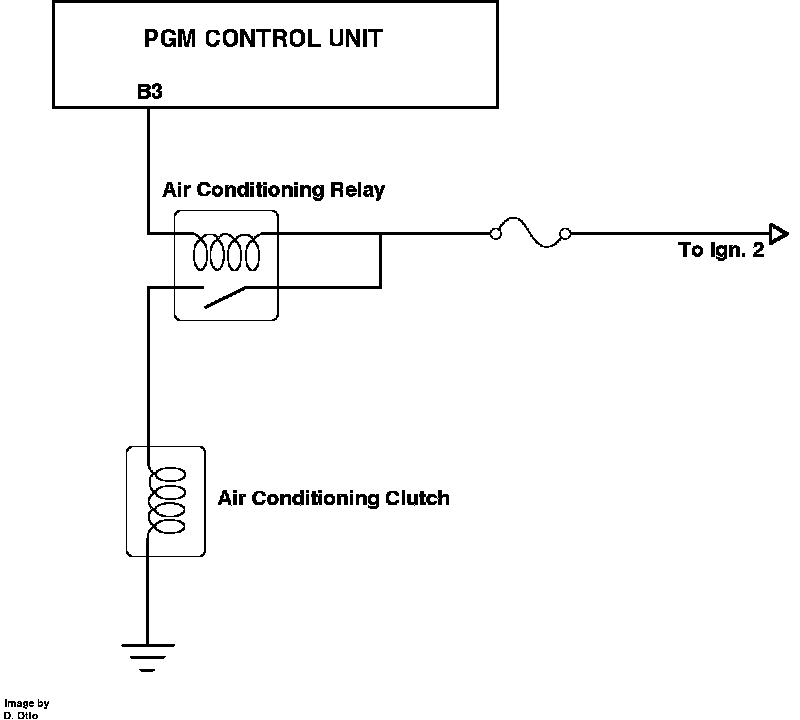

Compressor Clutch Relay: Description and Operation
A/C Compressor Clutch Relay Operation:

PURPOSE
When the relay is grounded it allows power to the air conditioning clutch, engaging the compressor.
LOCATION
In the under-dash relay box, passenger side.
OPERATION
Power is applied to the relay from ignition switch terminal (Ign. 2) and is hot whenever the switch is turned ON. The ground is supplied by ECU.